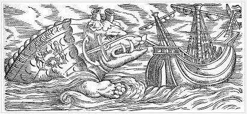

Cristóbal Colón, en el diario de su primer viaje a América, en 1492, describía así el paisaje americano: «La mar llana como un río y los aires mejores del mundo... El cantar de los pajaritos es tal, que parece que el hombre nunca se querría partir de aquí, y las manadas de los papagayos oscurecen el sol».
Juan de Mandeville, 1521